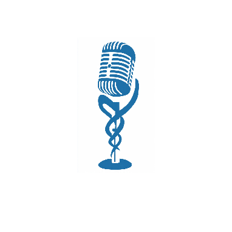

CLIQUE NO MICROFONE PARA INICIAR A ENGENHARIA DA COMUNICAÇÃO

Módulo 1 — A Arte da Oratória
Você não pode simplesmente falar. Você tem que envolver o seu auditório. Mas, antes de envolvê-lo... Você precisa se desenvolver!
Isso é Oratória. Não adianta querer envolver na fala, se antes, você não desenvolveu os mecanismos dela. E isso não se consegue através de técnicas superficiais. Já ouviu falar da técnica de Oratória? Não é isso que vou te entregar neste curso. O que você está prestes a conhecer é a Engenharia da Comunicação.
"O Senhor DEUS me deu uma língua erudita, para que eu saiba dizer boa palavra ao cansado. Ele me desperta todas as manhãs; desperta o meu ouvido para que eu ouça como aqueles que aprendem."
— Isaías 50:4
Esse Curso vai ajudar a desenvolver você, para você envolver seu público! Você não é só um orador(a), palestrante, paraninfo(a) ou quem está no pedestal. Você é um comunicador(a). Um desenvolvedor de opiniões. Não é apenas quem informa. Você é quem provoca através da sua fala.
Módulo 2 — Desenvolvimento da Postura
A Postura do Orador é a primeira Comunicação ao auditório. É a comunicação não verbal, que fala tanto ou mais que a comunicação audível. Antes da primeira sílaba, o auditório já o "leu".
Como se vestir: O traje é um código de autoridade. Deve ser condizente com o público (o traje do clero no altar, o terno no tribuno). Regras de etiqueta exigem que você nunca chame mais atenção pela roupa do que pela mensagem.
A Base Corporal: Pernas excessivamente abertas transmitem arrogância, dominação agressiva ou desleixo. Pernas muito fechadas sugerem fragilidade e medo. O peso deve estar distribuído, transmitindo estabilidade.
Vícios de Gestos: Ajustar óculos, mexer no cabelo, mãos nos bolsos ou esconder as mãos. Mãos visíveis são historicamente sinal de transparência e ausência de armas (engano). Vícios drenam a energia do argumento e distraem o foco do ouvinte.
Módulo 3 — Desenvolvimento da Respiração
Sem ar não há voz; sem controle de ar não há autoridade. A respiração correta é a Diafragmática (abdominal), permitindo sustentar frases longas sem arquejar ou perder o volume final.
[attachment_0](attachment)
Higiene Vocal: Cuidado com as amígdalas e hidratação constante. O orador profissional trata sua voz como um instrumento. O aquecimento vocal é obrigatório.
Treinamento com Caneta: Colocar uma caneta entre os dentes e ler em voz alta força a articulação muscular, destrava a língua e garante uma dicção cristalina.
Tom e Timbre: Baixo demais é ininteligível; alto demais é irritante. O timbre deve ser explorado para criar nuances. O microfone não é um apoio; ele deve ser usado com distância estratégica (evitando o "pop" de ar nas plosivas) e nunca deve esconder o rosto do orador.
Módulo 4 — Dicção e Conteúdo Persuasivo
Tão importante quanto falar é: o que falar. Rui Barbosa, o Águia de Haia, utilizava a precisão vocabular não para ser difícil, mas para ser cirúrgico na persuasão. Sua estratégia consistia em cercar o oponente com lógica e ética inabaláveis.
Paulo diante de Agripa (Atos 26): Uma aula de retórica. Paulo usa o exórdio (elogio inicial) para ganhar o ouvido do rei e, em seguida, desfia uma defesa lógica que quase o converte.
O Mensageiro de Davi (2 Samuel 1): O amalequita tentou administrar a notícia da morte de Saul com mentiras oportunistas, acreditando que agradaria Davi. A comunicação mal administrada e baseada no engano custou sua própria execução. O orador deve ser escravo da verdade.
Módulo 5 — A Engenharia da Comunicação
O produto principal da Oratória é a transformação. Oratória Persuasiva constrói pontes; Oratória Vexatória constrói vergonha. Vícios de linguagem, apelidos e o uso de diminutivos retiram a "gravitas" (peso) da sua autoridade.
Gafes, argumentos infundados ou falta de domínio do tema são imperdoáveis para quem sobe ao pedestal. Grandes nomes como Sócrates (com sua maiêutica) e Martin Luther King Jr. (com sua cadência rítmica e profética) não apenas falavam; eles moviam sociedades inteiras.
Módulo 6 — As Rédeas da Comunicação
Domine a Comunicação ou desista de falar em público. Herodes o Grande e os Tribunos de Roma sabiam que a palavra era a maior ferramenta de governo. A persuasão exige domínio emocional e técnico sobre as rédeas do discurso.
Gilberto Moreira: Escritor, Missionário e Educador. Desenvolveu a Engenharia da Comunicação e ferramentas de coerência (Calculadora MC e SC). Professor de Hebraico e Teologia. Desenvolvedor dos ecossistemas digitais AVANCE - FTA.